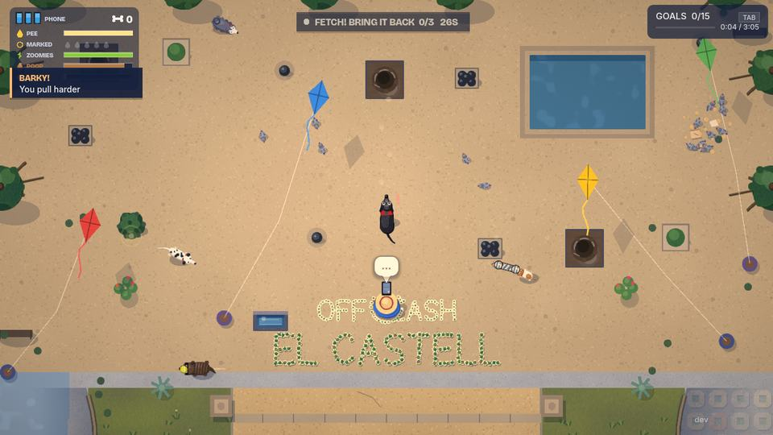

Montjuïc
The winding climb to the castle
The winding uphill road climbing Barcelona's seaside hill toward the seventeenth-century castle, bordered by prickly pear cactus and crossed overhead by the Montjuïc cable car. Between steep switchbacks and hill-path walkers, your human needs every bit of help up the grade.
- Off-leash stop
- EL CASTELL (Open plaça)
- Beat the clock
- Under 3:05
Screenshots



Goals (15)
- Mark 5 spots
- Have 4 good long sniffs
- Get the phone home without a scratch
- Get yourself home without a bump
- Get your business bagged
- Bring the ball back 3 times
- Bring Tofu the cat home
- Visit L'Estel gallery and claim the star bone
- Have a good long drink
- Find a ticket and ride the telefèric
- Land an x3 trick combo
- Fetch the frisbee
- Spell LEASH
- Find the hidden pernil
- Beat the clock (under 3:05)